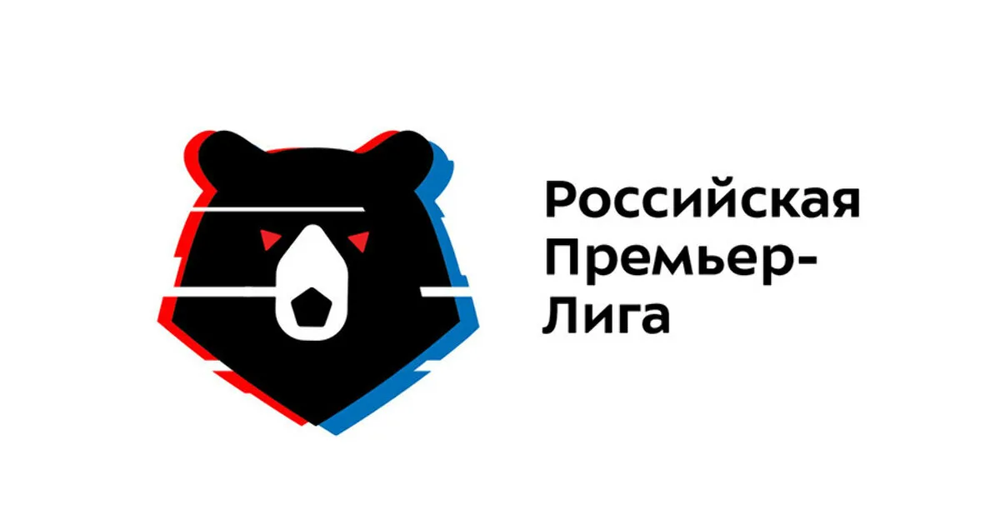
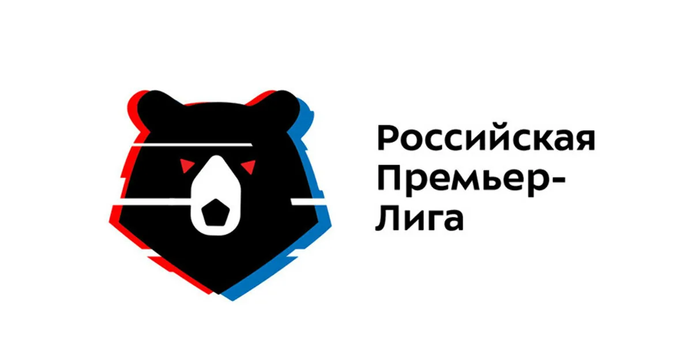

Ли́га чемпио́нов УЕФА (англ. UEFA Champions League) — ежегодный международный турнир по футболу, организованный Союзом европейских футбольных ассоциаций (УЕФА) среди клубов высших дивизионов в Европе. Самый престижный европейский клубный футбольный турнир. Со своего первого розыгрыша в сезоне 1955/56 и по сезон 1991/92 назывался «Кубком европейских чемпионов» (англ. European Champion Clubs' Cup). В сезоне 1991/92 был изменён формат турнира и после стадии 1/8 финала игрались групповые турниры. Тогда же появились гимн и эмблема. С сезона 1992/93 турнир получил своё нынешнее название. Победителем турнира становились 23 клуба, 12 из них выигрывали турнир более одного раза. Испанские клубы одерживали в турнире 20 побед. Рекордсменом по числу выигранных титулов является «Реал Мадрид», побеждавший в турнире 15 раз. С момента смены названия и формата турнира в 1992 году только «Реал Мадрид» смог выиграть Лигу чемпионов на протяжении трёх сезонов подряд (2015/2016, 2016/2017, 2017/2018). «Реал Мадрид» является клубом, который наибольшее количество раз выиграл Лигу чемпионов после смены формата — 9 раз. Действующим победителем турнира является испанский «Реал Мадрид», завоевавший свой 15-й трофей в сезоне 2023/24.
Кубок европейских чемпионов был основан в 1955 году по предложению французского спортивного журналиста и редактора «L’Équipe» Габриэля Ано. Идея о континентальном футбольном турнире посетила Ано после заявлений английской прессы о том, что «Вулверхэмптон Уондерерс», победивший осенью 1954 года «Спартак» и «Гонвед», является сильнейшим клубом мира. В своей газете Ано ответил, что для выявления сильнейшего клуба нужно провести соревнование, включающее в себя и домашние, и гостевые матчи. Уже на следующий день Ано опубликовал возможный проект турнира, а в январе 1955 года прошёл первый Кубок европейских чемпионов. Первый розыгрыш Кубка 1955/56 был турниром на выбывание, где каждый раунд игрался в два матча (дома и в гостях). До 1992 года в розыгрыше участвовали чемпионы стран и последний обладатель Кубка европейских чемпионов. Начиная с сезона 1991/92, формат турнира был изменён, в него был включён групповой раунд, а в следующем году турнир сменил название, став Лигой чемпионов. Далее последовало несколько изменений в количестве квалификационных этапов, структуре групп. В сезоне 1997/98 в турнире стали участвовать команды, занявшие вторые места в ряде стран (в соответствии с таблицей коэффициентов УЕФА). Система квалификационных раундов была перестроена так, чтобы чемпионы стран с низким коэффициентом могли принять участие в одном или нескольких квалификационных этапах до начала группового этапа, а команды из стран с высоким коэффициентом вступали бы в борьбу позже. В настоящий момент страны с наивысшим коэффициентом представляются в Лиге чемпионов четырьмя клубами. В период с 1960 по 2004 год обладатель Кубка европейских чемпионов участвовал в ныне отменённом Межконтинентальном кубке против обладателя южноамериканского Кубка Либертадорес. Сейчас победитель Лиги чемпионов участвует в Клубном чемпионате мира — турнире под эгидой ФИФА.
Число мест в розыгрыше зависит от таблицы коэффициентов УЕФА: ассоциации, занимающие в таблице с 1 по 4 место, представляют первые 4 команды; ассоциации, занимающие в таблице с 5 по 6 место, представляют первые 3 команды; ассоциации, занимающие в таблице с 7 по 15 место, представляют первые 2 команды; ассоциации, занимающие в таблице 16 место и ниже, представляют 1 команду. Место в таблице также определяет, с какого этапа клубы вступают в розыгрыш. Например, по 4 клуба из первых 4 ассоциаций сразу попадают в групповой этап, а ассоциации, занимающие в таблице самые низкие места, представляют 1 команду, начиная с квалификации. В сезоне 2004/05 «Ливерпуль» выиграл Лигу чемпионов, но в чемпионате Англии занял 5-е место, в то время как «Эвертон» — 4-е. Футбольная ассоциация Англии постановила отдать путёвку «Эвертону», но в УЕФА пришли к соглашению, что оба мерсисайдских клуба примут участие в Лиге чемпионов: «Ливерпуль» с 1-го квалификационного раунда, а «Эвертон» — с 3-го[3]. С тех пор в УЕФА приняли постановление о том, что победитель Лиги чемпионов автоматически попадает в групповой раунд следующего розыгрыша, вне зависимости от того, какое место он занял в национальном первенстве. Кроме того, вплоть до сезона 2014/15 ни одна страна не могла выставлять более четырёх участников. Так как первые три страны в рейтинге УЕФА делегируют в Лигу чемпионов по 4 команды, то в случае, если победителем оказывался представитель такой страны и он не занимал в своём чемпионате место, дающее право на участие в Лиге чемпионов, то команда, занявшая в этом первенстве 4-е место, отправлялась в Лигу Европы. Начиная с сезона 2015/16 в связи с допуском в Лигу чемпионов победителя Лиги Европы предыдущего сезона максимальная квота от одной страны была увеличена до пяти команд. И теперь команда, занявшая в первенстве одной из трёх ведущих стран 4-е место, отправится в Лигу Европы только в случае, если оба победителя еврокубков предыдущего сезона, представляя эту же страну, не займут в своём чемпионате места, дающие право на участие в Лиге чемпионов. В сезоне 2005/06 «Ливерпуль» и «Артмедиа» стали первыми клубами, которые попали в групповой этап, пройдя все квалификационные раунды. В сезоне 2008/09 БАТЭ и «Анортосис» повторили это достижение. Чтобы быть допущенным к розыгрышу, клубу необходимо отвечать некоторым критериям: любой клуб должен иметь лицензию своей национальной ассоциации, иметь стадион, допущенный УЕФА к соревнованиям, соответствующую инфраструктуру и отвечать финансовым требованиям